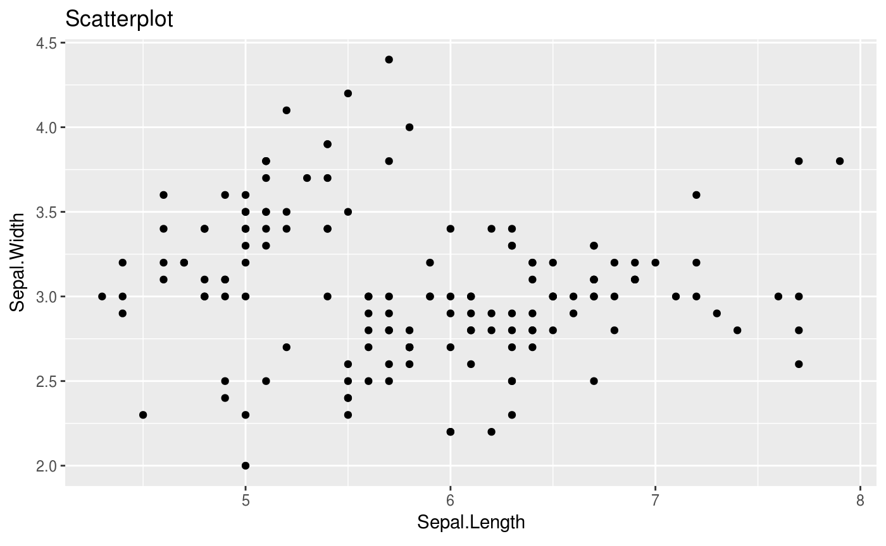
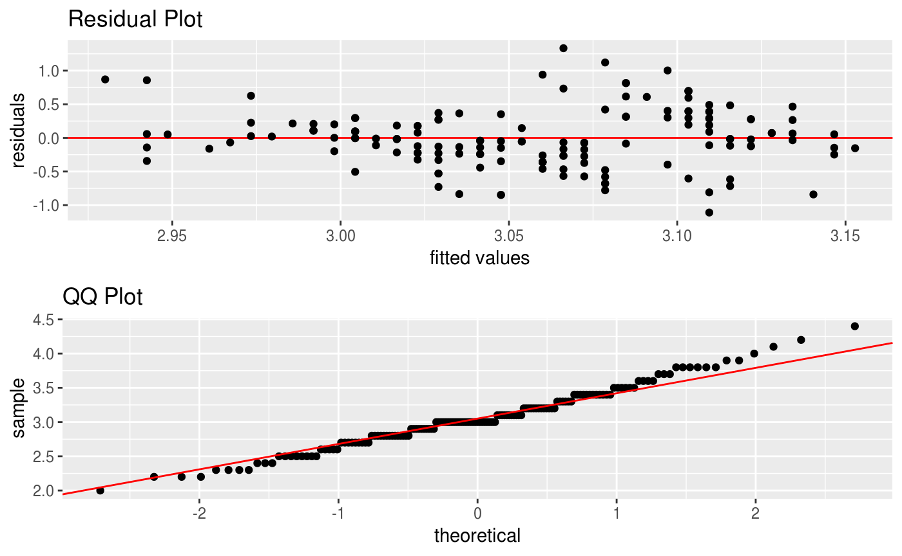

Overview
statr is a personal R package that I have created for organizational/convenience purposes. This project is purely experimental! A (possibly incomplete) list of functions contained in the package can be found below:
-
tidy()tidy’s R package code and updates documentation -
CVsplit()splits data objects into training and testing sets -
data_gen()generates data for linear regression settings -
dense()generates dense matrices -
denseQR()generates dense matrices via spectral decomposition -
tridiag()generates tri-diagonal matrices -
derivative()approximates the derivative for a given function -
diagnostic()creates diagnostic plots using ggplot (residual and QQ) -
dsearch()is a dichotomous search algorithm for minimizing a univariate function -
bsearch()is a bi-section search algorithm for minimizing a univariate function -
LASSO()calculates lasso regression coefficient with optimal tuning -
RIDGE()calculates ridge regression coefficient with optimal tuning -
scatter()creates a scatterplot using ggplot
Installation
The easiest way to install is from the development version from Github:
If there are any issues/bugs, please let me know: github. You can also contact me via my website. Contributions are welcome!
Usage
library(statr)
library(magrittr)
# we will use the iris data set
X = dplyr::select(iris, -c(Species, Sepal.Length)) %>% as.matrix
y = dplyr::select(iris, Sepal.Length) %>% as.matrix
y_class = ifelse(dplyr::select(iris, Species) == "setosa", 1, 0)
# let us split the data for testing and training
CV = CVsplit(X, y)
# we can do some exploratory analysis
# plot Sepal.Length v Sepal.Width
iris %>% scatter(Sepal.Length, Sepal.Width)

## $betas
## [,1]
## Sepal.Width 0.005620669
## Petal.Length 0.007442309
## Petal.Width 0.002472294
##
## $lam
## [1] 2584.278## $betas
## [,1]
## Sepal.Width 0.0000000
## Petal.Length 0.3234403
## Petal.Width 0.0000000
##
## $lam
## [1] 18.23157# we can also generate our own data
data = data_gen(p = 10, r = 5, n = 100)
CV = CVsplit(data$X, data$Y)
# and again fit a ridge regression
statr::RIDGE(CV$X.train, CV$Y.train)## $betas
## s0 s0 s0 s0 s0
## V1 0.77619689 0.32884111 -0.126507107 0.01596722 -0.05670844
## V2 -0.01439418 0.04564571 0.089448793 -0.08579281 0.13708957
## V3 0.01268113 0.20640759 0.213166137 -0.12024347 -0.09388864
## V4 -0.03261295 0.11982686 0.411742662 0.03196814 -0.08945352
## V5 0.05129667 -0.09476382 0.343063640 0.24451435 -0.13134119
## V6 0.06697614 0.03754578 0.204350822 0.25353192 0.07039443
## V7 -0.23740861 -0.03386081 0.096812528 0.04658776 0.17480947
## V8 -0.18084991 -0.08875259 0.006943115 -0.09556854 -0.19327562
## V9 0.02420790 0.04258616 -0.276798485 -0.11168795 -0.44108914
## V10 -0.10103022 -0.14400505 -0.440632440 -0.01353731 -0.42875660
##
## $lam
## [1] 0.3114447# we can also generate random matrices with may be useful
# for other applications
# tridiagonal matrices
tridiag(p = 5)$Omega %>% round(5)## [,1] [,2] [,3] [,4] [,5]
## [1,] 1.96078 -1.37255 0.00000 0.00000 0.00000
## [2,] -1.37255 2.92157 -1.37255 0.00000 0.00000
## [3,] 0.00000 -1.37255 2.92157 -1.37255 0.00000
## [4,] 0.00000 0.00000 -1.37255 2.92157 -1.37255
## [5,] 0.00000 0.00000 0.00000 -1.37255 1.96078## [,1] [,2] [,3] [,4] [,5]
## [1,] 8.04348 -1.95652 -1.95652 -1.95652 -1.95652
## [2,] -1.95652 8.04348 -1.95652 -1.95652 -1.95652
## [3,] -1.95652 -1.95652 8.04348 -1.95652 -1.95652
## [4,] -1.95652 -1.95652 -1.95652 8.04348 -1.95652
## [5,] -1.95652 -1.95652 -1.95652 -1.95652 8.04348## [,1] [,2] [,3] [,4] [,5]
## [1,] 1.0 0.9 0.9 0.9 0.9
## [2,] 0.9 1.0 0.9 0.9 0.9
## [3,] 0.9 0.9 1.0 0.9 0.9
## [4,] 0.9 0.9 0.9 1.0 0.9
## [5,] 0.9 0.9 0.9 0.9 1.0